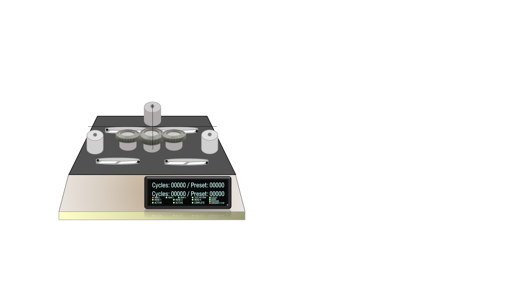
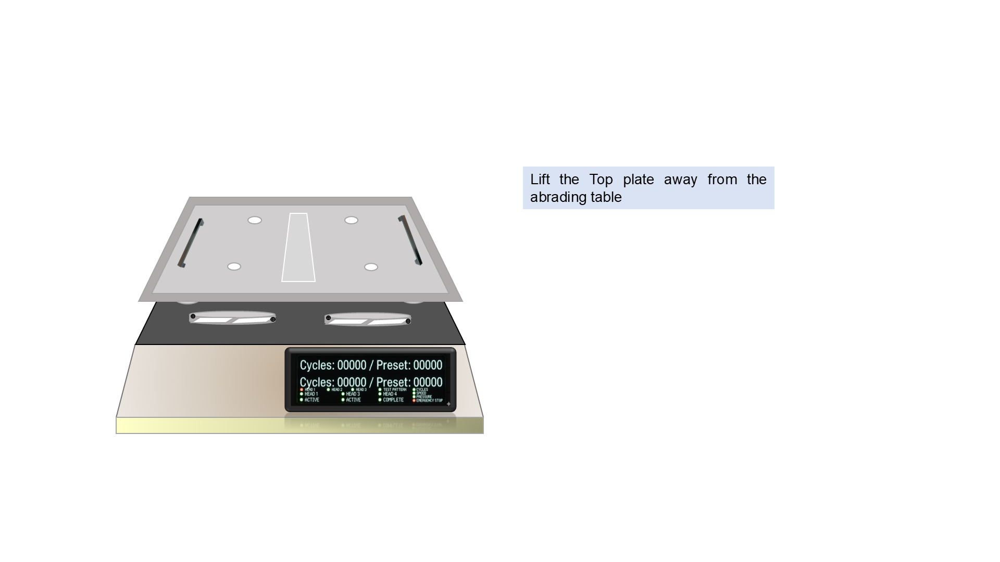
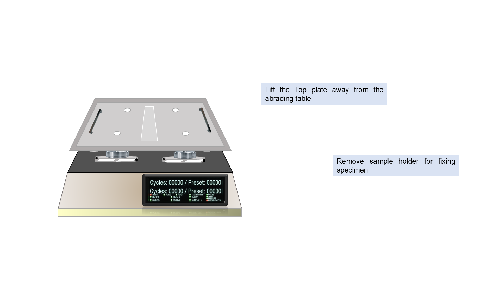
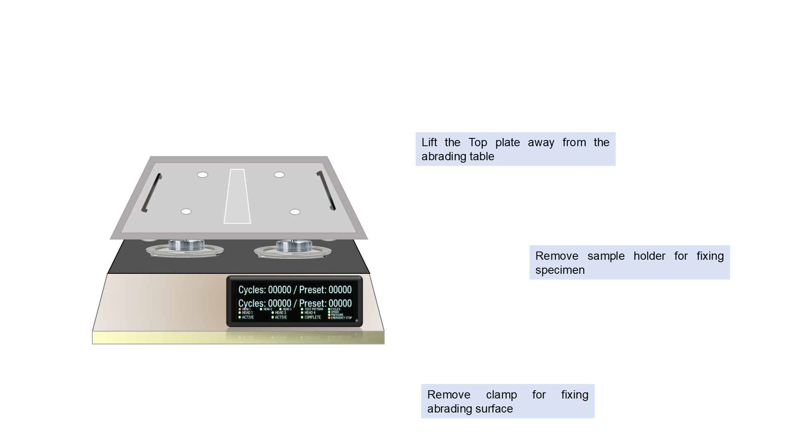

Step 10 1) Lift the top plate away from the abrading table. 2) Remove the sample holder for fixing the specimen. 3) Remove the clamp for fixing the abrading surface. Click the slide to reveal each removal step.



